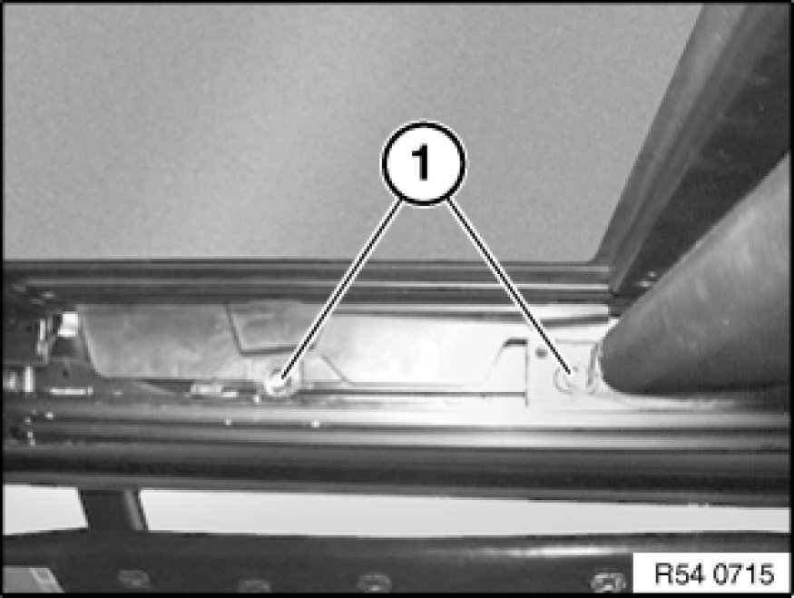
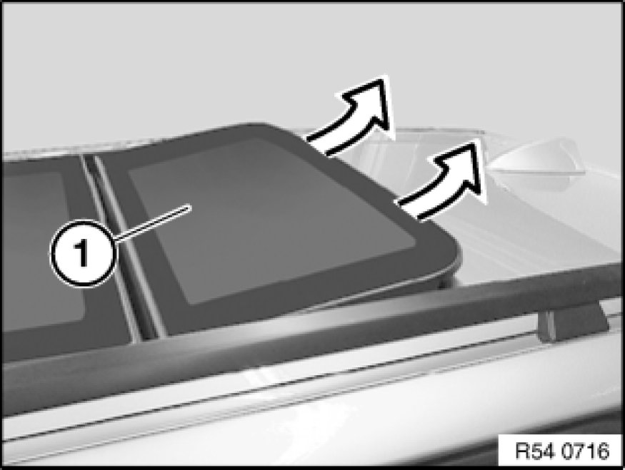

54 10 175 Removing and Installing Rear Glass Slide/Tilt Sunroof Cover
54 10 175 - Removing and installing rear glass slide/tilt sunroof cover

Note:
The following steps can be carried out inside the vehicle with the glass roof panel fully closed.
Open floating roofliner fully.
Make sure that grease at the ends of the rail do not come into contact with the roofliner.
Not necessary for replacement:
Before removing the Torx screws, make a mark around the washers in order to ensure correct alignment during installation.

Remove and dispose of the Torx screws (1) securing the glass panel to the mechanism.
Installation:
Insert new Torx screws with Loctite and align washers to markings.
Tightening torque 54 12 01AZ 54 12 Mechanical Components, Panorama Sunroof.

Important!
A second person is required to help in removing and installing the glass slide/tilt sunroof lid!
Lift out glass slide/tilt sunroof cover (1).
Installation:
Tape off complete edge area at roof aperture with fabric adhesive tape (risk of damage).
Install glass slide/tilt sunroof cover carefully (twist in) as seal can be damaged during installation.
Check glass slide/tilt sunroof cover for correct alignment Adjustments and adjust if necessary.